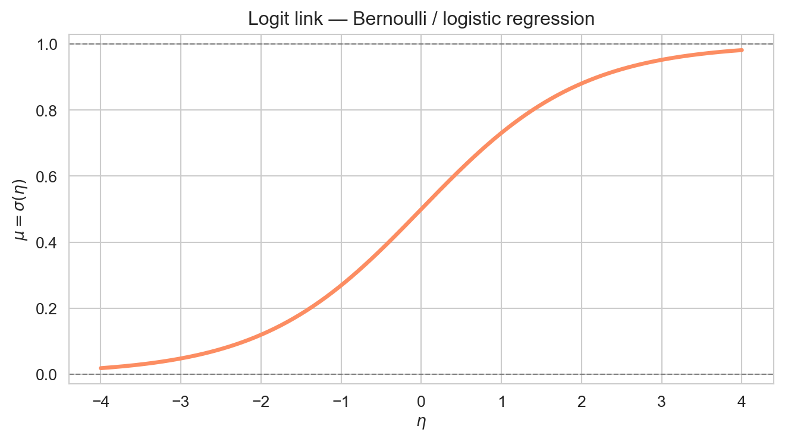
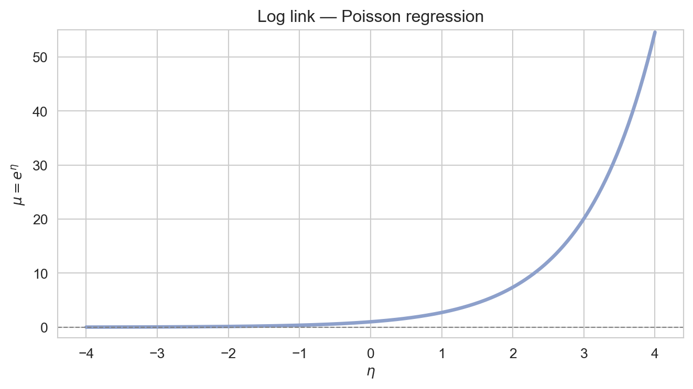
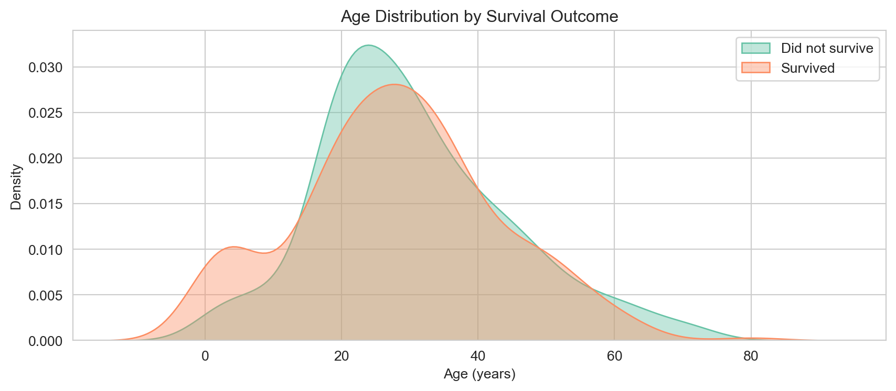
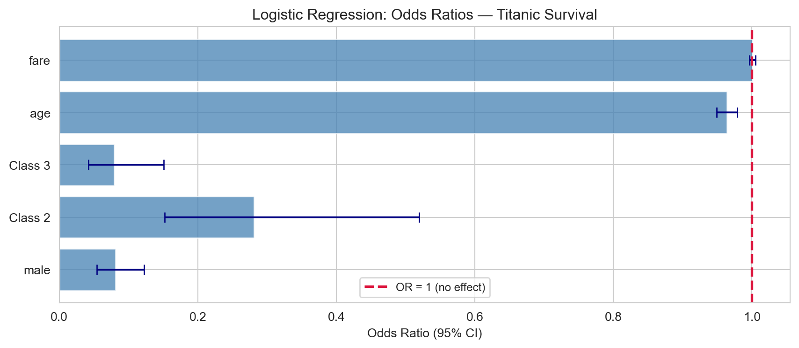
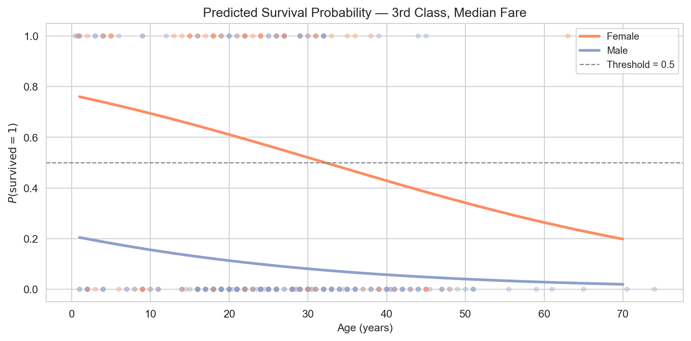
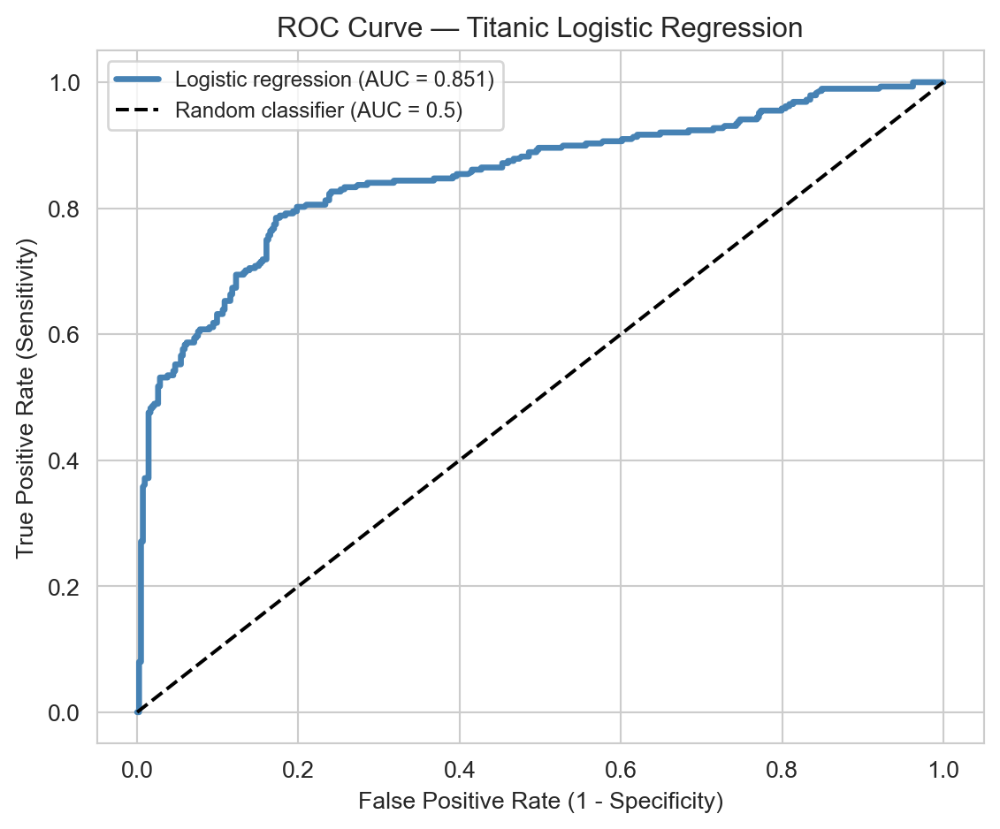
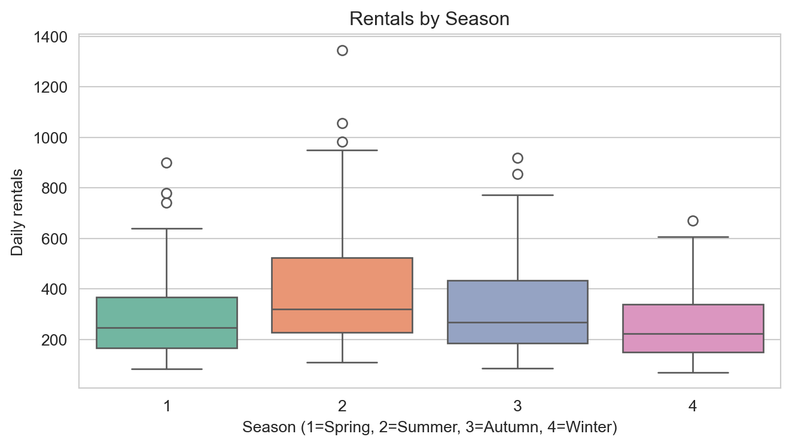
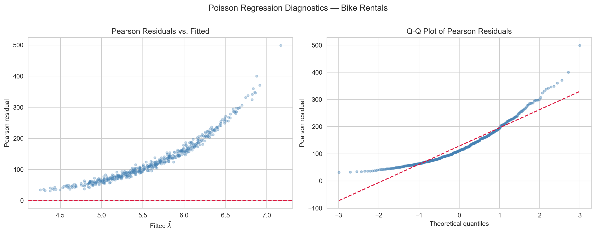

In this note we define the Generalized Linear Models, link functions and several specific implementations including logistic regression and Poisson regression.
Author
John Robin Inston
Published
May 13, 2026
Modified
May 13, 2026
ImportantLearning Objectives
Understand the limitations of linear regression when the response is not continuous.
Introduce the Generalized Linear Model (GLM) framework: exponential family, link functions, and maximum likelihood estimation.
Derive and interpret logistic regression for binary responses.
Introduce Poisson regression for count responses.
Fit GLMs in Python using statsmodels and interpret outputs, diagnostics, and model comparisons.
Libraries and Styling
# Librariesimport numpy as npimport pandas as pdimport matplotlib.pyplot as pltimport seaborn as snsfrom scipy.stats import norm, binomfrom scipy.special import expit # the logistic (sigmoid) functionimport statsmodels.formula.api as smfimport statsmodels.api as smfrom statsmodels.stats.anova import anova_lmfrom sklearn.metrics import ( confusion_matrix, ConfusionMatrixDisplay, roc_curve, roc_auc_score)# Figure stylingsns.set_style('whitegrid')sns.set_palette('Set2')
The Limits of Linear Regression
The MLR model assumes \(Y_i \sim \mathcal{N}(\mu_i, \sigma^2)\) with \(\mu_i = \mathbf{x}_i^\top \boldsymbol{\beta}\), so the mean is modelled as an unrestricted linear combination of predictors. This breaks down for many common response types:
Common response types incompatable with MLR.
Response type
Example
Problem with linear regression
Binary
Patient survived / died
Predictions outside \([0, 1]\); errors not normal
Count
Number of insurance claims
Must be non-negative; variance grows with mean
Proportion
Percentage of votes won
Bounded in \([0, 1]\); heteroscedastic
Positive continuous
Hospital length of stay
Right-skewed; errors non-normal
As a concrete example, suppose we want to predict whether a Titanic passenger survived (\(Y_i \in \{0,1\}\)) from their characteristics. We want to model \(P(Y_i = 1 \mid \mathbf{x}_i)\), but fitting OLS directly produces predictions outside \([0,1]\) and clearly non-normal residuals.
OLS fitted to a binary outcome: predicted values fall outside [0, 1] for extreme predictor values, and the residuals are clearly non-normal.
The Generalized Linear Model
ImportantGeneralized Linear Model (GLM)
A GLM extends linear regression by relaxing the normality assumption. It has three components:
Random component: the response \(Y_i\) follows a distribution from the exponential family with mean \(\mu_i = \mathbb{E}[Y_i]\).
Systematic component: a linear predictor \(\eta_i = \mathbf{x}_i^\top \boldsymbol{\beta}\).
Link function\(g\): connects the mean to the linear predictor, \(g(\mu_i) = \eta_i\).
The key idea is that we no longer model \(\mu_i\) directly as a linear combination. Instead we model a transformation of \(\mu_i\) linearly: \(g(\mu_i) = \eta_i = \mathbf{x}_i^\top \boldsymbol{\beta}\). The link function ensures that \(\mu_i\) stays in the valid range for the chosen distribution.
The Exponential Family
A distribution belongs to the exponential family if its probability density/mass function can be written as
where \(\theta\) is the canonical parameter, \(\phi\) is the dispersion parameter, and \(b(\cdot)\), \(a(\cdot)\), \(c(\cdot)\) are known functions. Two important properties follow: \(\mu = \mathbb{E}[Y] = b'(\theta)\) and \(\text{Var}(Y) = b''(\theta)\,a(\phi)\) — variance is a function of the mean.
Distribution
Response type
Canonical link \(g(\mu)\)
Normal
Continuous \((-\infty, \infty)\)
Identity: \(g(\mu) = \mu\)
Bernoulli/Binomial
Binary / proportion \([0,1]\)
Logit: \(g(\mu) = \log\frac{\mu}{1-\mu}\)
Poisson
Count \(\{0, 1, 2, \ldots\}\)
Log: \(g(\mu) = \log\mu\)
Gamma
Positive continuous \((0, \infty)\)
Inverse: \(g(\mu) = 1/\mu\)
The canonical link is the natural choice derived from the exponential family form and is typically used as a default, though other links can be used if they make scientific sense.
Identity link: \(g(\mu) = \mu\). The mean is modelled directly as the linear predictor, with no constraint — appropriate for continuous, unbounded responses.

Logit link: \(g(\mu) = \log(\mu / (1 - \mu))\). The inverse is the logistic function, which squashes the linear predictor into \((0, 1)\) — appropriate for binary responses.

Log link: \(g(\mu) = \log \mu\). The inverse is the exponential function, which maps the linear predictor to a positive mean — appropriate for count responses.
Estimation: Maximum Likelihood
OLS minimises the sum of squared residuals, which is optimal when errors are Gaussian. For non-Gaussian responses, GLMs are estimated by maximising the log-likelihood:
There is no closed-form solution in general, so we use iteratively reweighted least squares (IRLS). At the current estimate \(\boldsymbol{\beta}^{(t)}\), IRLS computes:
repeating until convergence. When applied to the Normal family with the identity link, \(w_i = 1\) for all \(i\) and \(z_i = y_i\) — IRLS reduces to a single step of ordinary least squares. statsmodels handles this automatically.
Deviance and Model Comparison
ImportantDeviance
The deviance of a fitted GLM is: \[D = 2\left[\ell(\text{saturated model}) - \ell(\hat{\boldsymbol{\beta}})\right],\] where the saturated model fits each observation perfectly.
Deviance is the GLM analogue of the residual sum of squares. The null deviance (\(D_0\)) measures fit of the intercept-only model; the residual deviance (\(D\)) measures fit of the fitted model. A large drop \(D_0 - D\) indicates the predictors are useful.
To test whether \(q\) additional parameters significantly improve fit, we use the likelihood ratio test (LRT):
Reject \(H_0: \beta_{p-q+1} = \cdots = \beta_p = 0\) at level \(\alpha\) if \(G^2 > \chi^2_{q,\,1-\alpha}\). This is the GLM analogue of the partial \(F\)-test; for \(q=1\) it is asymptotically equivalent to the Wald \(z\)-test but preferred in small samples.
Logistic Regression
Logistic regression is the GLM for a binary response\(Y_i \in \{0,1\}\). It arises naturally in settings like: did a patient recover? did a loan default? is a species present at a site?
We assume \(Y_i \mid \mathbf{x}_i \sim \text{Bernoulli}(\pi_i)\) and model the log-odds (logit) of \(\pi_i\) as a linear function of the predictors:
Non-linear; depends on the values of all predictors
If \(\beta_j = 0.5\), then \(e^{0.5} \approx 1.65\): a one-unit increase in \(X_j\)multiplies the odds by \(1.65\). Odds ratios are multiplicative, not additive. If \(\beta_j < 0\), the odds decrease with \(X_j\).
The log-likelihood (also called binary cross-entropy) is:
A pseudo-\(R^2\) is often computed as McFadden’s \(R^2 = 1 - D/D_0\).
Application: Titanic Survival
We illustrate logistic regression on Titanic passenger data — a classic binary classification problem where \(Y = 1\) indicates survival, with predictors including class, sex, age, and fare.
Survival rates by sex and passenger class. Women and first-class passengers had substantially higher survival rates.
KDE Plot Code
fig, ax = plt.subplots(figsize=(9, 4))for label, grp in titanic.groupby('survived'): sns.kdeplot(grp['age'], ax=ax, fill=True, alpha=0.4, label='Survived'if label ==1else'Did not survive')ax.set_xlabel('Age (years)')ax.set_ylabel('Density')ax.set_title('Age Distribution by Survival Outcome')ax.legend()plt.tight_layout(); plt.show()

Age distributions for survivors and non-survivors. Children show a somewhat higher survival rate, consistent with the ‘women and children first’ policy.
We fit the model using smf.logit(), which uses the same formula syntax as smf.ols(). Categorical variables are automatically dummy-coded with C(...).
Standard errors and tests are based on the Wald statistic \(z = \hat{\beta}_j / \widehat{\text{SE}}(\hat{\beta}_j) \approx \mathcal{N}(0,1)\), a large-sample result from maximum likelihood theory.

Odds ratios with 95% confidence intervals for the Titanic logistic regression. An odds ratio > 1 means increased odds of survival; < 1 means decreased odds.
We can predict probabilities for individual passengers using logit1.predict(). The coefficient table lives on the log-odds scale, but for communication we usually want probabilities:
newdata = pd.DataFrame({'sex': ['female', 'male'],'age': [30, 30],'pclass': [1, 3],'fare': [50, 10]})probs = logit1.predict(newdata)for i, row in newdata.iterrows():print(f" {row['sex']:6s}, age {row['age']}, class {row['pclass']}, "f"fare {row['fare']:.0f}: P(survive) = {probs[i]:.3f}")
female, age 30, class 1, fare 50: P(survive) = 0.933
male , age 30, class 3, fare 10: P(survive) = 0.081
A 30-year-old female in first class has a high predicted survival probability; a 30-year-old male in third class has a much lower one — consistent with the historical record.

Predicted survival probability as a function of age, stratified by sex, for a third-class passenger with median fare. The logistic curve is clearly visible.
Classification Performance
ImportantIn-sample evaluation
The classification metrics below are computed on the same data used to fit the model, giving an optimistic picture of predictive performance. In a prediction-focused workflow you would split data into training and test sets before reporting these metrics. Here our primary goal is inference — understanding which predictors are associated with survival — and the classification metrics illustrate how a fitted logistic regression translates into a classifier.
We classify \(\hat{Y}_i = 1\) if \(\hat{\pi}_i > 0.5\) and summarise performance with the confusion matrix and ROC curve.
Confusion matrix for the logistic regression model at threshold 0.5 (in-sample).
The ROC curve plots the true positive rate (sensitivity) against the false positive rate (1 - specificity) as the threshold varies from 1 to 0. The AUC (area under the ROC curve) measures overall discriminative ability: AUC = 1 is perfect; AUC = 0.5 is a random classifier.

ROC curve for the logistic regression model (in-sample). AUC substantially above 0.5 indicates good discriminative power.
We can test whether adding embark_town improves the model using the LRT:
print(f"{'Model':<30}{'AIC':>8}{'BIC':>8}{'Pseudo R²':>10}")print("-"*58)for name, m in [('Without embark_town', logit1), ('With embark_town', logit2)]: pr2 =1- m.llf / m.llnullprint(f"{name:<30}{m.aic:>8.2f}{m.bic:>8.2f}{pr2:>10.4f}")
Model AIC BIC Pseudo R²
----------------------------------------------------------
Without embark_town 658.64 686.05 0.3271
With embark_town 658.67 695.22 0.3312
Poisson Regression
Poisson regression is the GLM for count data: responses \(Y_i \in \{0, 1, 2, \ldots\}\). A natural model is \(Y_i \sim \text{Poisson}(\lambda_i)\), with \(\mathbb{E}[Y_i] = \lambda_i > 0\) and — crucially — \(\text{Var}(Y_i) = \lambda_i\) (variance equals mean).
Coefficients are interpreted multiplicatively via the incidence rate ratio (IRR)\(e^{\hat{\beta}_j}\), the Poisson analogue of the odds ratio:
Coefficient
Interpretation
\(\beta_j\)
A one-unit increase in \(X_j\)adds\(\beta_j\) to \(\log\lambda\)
\(e^{\beta_j}\)
A one-unit increase in \(X_j\)multiplies\(\lambda\) by \(e^{\beta_j}\)
\(e^{\beta_j} > 1\)
The expected count increases
\(e^{\beta_j} < 1\)
The expected count decreases
Application: Daily Bike Rentals
We simulate a dataset of daily bicycle rental counts with weather and calendar predictors — the structure mirrors real bike-sharing data and allows us to verify that the model recovers the known coefficients.
Distribution of daily rental counts. The right skew is characteristic of count data and motivates the use of Poisson regression over OLS.
Rentals vs. normalised temperature. A clear positive association is visible, consistent with the positive coefficient on temperature in the Poisson model.
Rentals vs. normalised humidity. Higher humidity is associated with fewer rentals, consistent with the negative humidity coefficient.

Rental counts by season (1 = Spring, 2 = Summer, 3 = Autumn, 4 = Winter). Summer and autumn show higher median rentals than spring or winter.
Incidence rate ratios (IRR = exp(β̂)) with 95% CIs. An IRR > 1 means more rentals; < 1 means fewer rentals per unit increase in the predictor.

Poisson regression diagnostics. Left: Pearson residuals vs. fitted values — constant spread around zero indicates the model is well-specified; a fan shape would indicate overdispersion. Right: Q-Q plot of Pearson residuals — points near the diagonal confirm the standardised residuals follow N(0, 1) as expected under a correctly-specified Poisson model.
GLM Diagnostics and Assumptions
In OLS, residuals \(e_i = y_i - \hat{y}_i\) have constant variance. In GLMs the variance of \(Y_i\) depends on the mean, so raw residuals are not comparable across observations. Two standardised alternatives are used:
Under a well-fitting GLM, both should look approximately \(\mathcal{N}(0,1)\) with no pattern against fitted values. Core assumptions and how to check them:
Assumption
How to check
Correct distribution family
Residual plots; compare AIC across families
Correct link function
Component-plus-residual plots; try alternative links
Correct linear predictor
Residuals vs. each predictor; added-variable plots
Independence of observations
Study design; check for clusters or time structure
No influential observations
Cook’s distance; leverage
GLMs do not require constant error variance or normally distributed errors — the exponential family framework handles both explicitly.
Overdispersion in Poisson Regression
ImportantOverdispersion
Overdispersion occurs when the observed variance exceeds the variance assumed by the model. For Poisson regression the model assumes \(\text{Var}(Y_i) = \lambda_i\). If the true variance is \(\phi \lambda_i\) with \(\phi > 1\), the data are overdispersed.
Overdispersion leads to underestimated standard errors and \(p\)-values that are too small. Diagnose it with the dispersion statistic \(\hat{\phi} = \chi^2_P / (n - p - 1)\), where \(\chi^2_P = \sum r_i^2\) is the Pearson chi-squared. Remedies include the quasi-Poisson model (which estimates \(\phi\) from the data) or the negative binomial distribution.